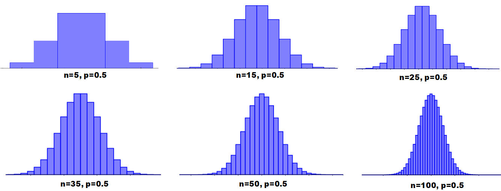
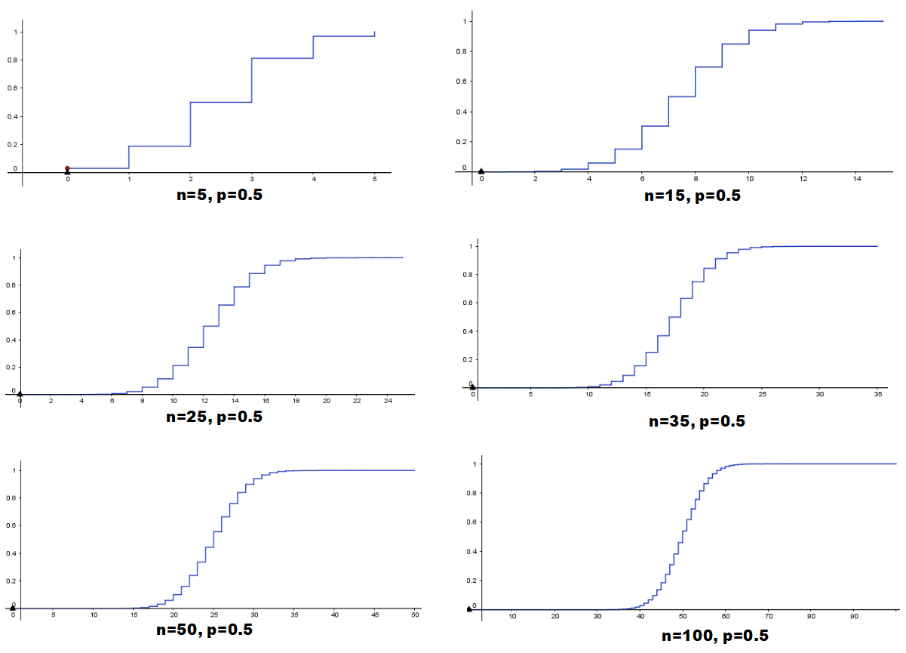

dbinom(k, size = n, prob = p)DISTRIBUCIONES DISCRETAS EN R
Distribución binomial

About these lecture notes. These notes present the binomial distribution, Bernoulli trials, probability functions, cumulative probabilities, moments, and applications with R.
1 Distribución binomial
1.0.1 Experimentos de Bernoulli y binomial
El experimento de Bernoulli sólo tiene dos resultados posibles: “éxito” y “fracaso”. Un éxito ocurre con probabilidad \(p\), siendo\(0<p<1\).
El experimento binomial es un experimento de Bernoulli que se ejecuta \(n\) veces, de tal manera que las diferentes ejecuciones se efectúen independientemente unas de las otras y con la misma probabilidad \(p\).
1.0.2 Función de probabilidad
Si se realiza \(n\) veces un experimento de Bernoulli con probabilidad de éxito \(p\)y si\(X\) denota al número total de éxitos obtenidos, entonces, la probabilidad de que se obtengan \(k\) éxitos está dada por la función de probabilidad \(f\):
\[f(k) \;=\;P(X=k) \;=\; {n\choose k} p^k\, (1-p)^{n-k}, \qquad k=0,1,2, \ldots, n\]
La correspondiente distribución de \(X\)se conoce con el nombre de distribución binomial con parámetros\(n\)y\(p\).
El código para escribir la expresión anterior es:
$$f(k) \;=\; P(X=k) \;=\; {n\choose k} p^k\, (1-p)^{n-k}, \qquad k=0,1,2, \ldots, n$$1.0.3 Gráfica de la función de probabilidad
En las gráficas de abajo se muestran diferentes representaciones gráficas de la función de probabilidad binomial con diferentes \(n=5, 15, 25, 35, 50, 100\)y el mismo valor de\(p=0.5\).

1.0.4 Función de de distribución acumulada
Si \(f\)es la función de probabilidad binomial, entonces la función de distribución acumulada binomial\(F\) se calcula así:
\[F(t)\; =\; P(X\leq t) \;= \; \sum\limits_{x; \, x\leq t} f(x), \quad \text{para todo $t$ real}\]
En las gráficas de abajo se muestran diferentes representaciones gráficas de \(F\)con diferentes\(n=5, 15, 25, 35, 50, 100\)y el mismo valor de\(p=0.5\).

1.0.5 Esperanza y varianza
\[E(X)= np, \qquad V(X)= np(1-p)\]
El código para escribir la expresión anterior es:
$$E(X)= np, \qquad V(X)= np(1-p)$$2 Cómo hacerlo con R
Sean \(n\)el tamaño muestral y\(p\) la probabilidad de éxito.
Función de probabilidad
El código correspondiente para calcular la función de probabilidad \(f(k)=P(X=k)\)de la variable aleatoria\(X\) es:
Función de distribución acumulada
El código correspondiente para calcular la función de distribución acumulada \(F(k) = P(X\leq k)\)de la variable aleatoria\(X\) es:
pbinom(k, size = n, prob = p)3 Ejemplo 1: Enunciado
Supóngase que se lanza una moneda 5 veces y sea \(X\) la variable aleatoria que representa el número de caras que resultan. Halle:
La probabilidad de que el número de caras sea igual a 3 (utilizando la fórmula binomial).
La probabilidad de que el número de caras sea igual a 3 (utilizando la función
dbinom).La probabilidad de que el número de caras sea menor o igual que 3 (utilizando la fórmula binomial).
La probabilidad de que el número de caras sea menor o igual que 3 (utilizando la función
pbinom).La probabilidad de que el número de caras sea mayor que 3 (utilizando la fórmula binomial).
La probabilidad de que el número de caras sea mayor que 3 (utilizando la función
pbinom).La probabilidad de que el número de caras se encuentre entre 1 y 4 (ambos inclusive).
La probabilidad de que el número de caras se encuentre entre 1 y 4 (ambos no inclusive).
La esperanza de \(X\), es decir, la esperanza del número de caras que resultan.
La varianza de \(X\), es decir, la varianza del número de caras que resultan.
La desviación de \(X\), es decir, la desviación del número de caras que resultan.
4 Ejemplo 1: Solución
La variable \(X\)tiene distribución binomial con parámetros\(n=5\)y\(p=0.5\).
n <- 5
p <- 0.54.0.1 Solución parte (a)
Utilizando la fórmula binomial, la probabilidad de que el número de caras sea igual a 3 se calcula así:
\[P(X= 3) = {5\choose 3} (0,5)^3\, (1-0,5)^{5-3} = 0.3125\]
El código para escribir la expresión anterior es:
$$P(X= 3) = {5\choose 3} (0,5)^3\, (1-0,5)^{5-3} = 0.3125$$k <- 3
combinatoria <- choose(n,k)
exito <- p^k
fracaso <- (1-p)^(n-k)
probabilidad_a <- combinatoria*exito*fracaso
probabilidad_a## [1] 0.3125Es decir, la probabilidad de que el número de caras sea igual a 3 es 0.3125.
4.0.2 Solución parte (b)
Con la función dbinom, la probabilidad se calcula así:
k <- 3
probabilidad_b <- dbinom(k, size=n, prob=p)
probabilidad_b## [1] 0.3125Es decir, la probabilidad de que el número de caras sea igual a 3 es 0.3125.
4.0.3 Solución parte (c)
Utilizando la fórmula binomial, la probabilidad de que el número de caras sea menor o igual que 3 se calcula así:
\[\begin{eqnarray*} P(X\leq 3) &=& f(0) + f(1) + f(2) + f(3)\\ &=& {5\choose 0} (0,5)^0\, (1-0,5)^{5-0} +{5\choose 1} (0,5)^1\, (1-0,5)^{5-1}+ {5\choose 2} (0,5)^2\, (1-0,5)^{5-2} +{5\choose 3} (0,5)^3\, (1-0,5)^{5-3}\\ &=& 0.8125 \end{eqnarray*}\]
El código para escribir la expresión anterior es:
\begin{eqnarray*}
P(X\leq 3) &=& f(0) + f(1) + f(2) + f(3)\\
&=& {5\choose 0} (0,5)^0\, (1-0,5)^{5-0} +{5\choose 1} (0,5)^1\, (1-0,5)^{5-1}+
{5\choose 2} (0,5)^2\, (1-0,5)^{5-2} +{5\choose 3} (0,5)^3\, (1-0,5)^{5-3}\\
&=& 0.8125
\end{eqnarray*}En R se calcula así
k <- 0:3
combinatoria <- choose(n,k)
exito <- p^k
fracaso <- (1-p)^(n-k)
probabilidades <- combinatoria*exito*fracaso
probabilidad_c <- sum(probabilidades)
probabilidad_c## [1] 0.8125Es decir, la probabilidad de que el número de caras sea menor o igual que 3 es 0.8125.
4.0.4 Solución parte (d)
Con la función pbinom, la probabilidad se halla así:
k <- 3
probabilidad_d <- pbinom(k, size=n, prob=p)
probabilidad_d## [1] 0.8125Es decir, la probabilidad de que el número de caras sea menor o igual que 3 es 0.8125.
4.0.5 Solución parte (e)
Utilizando la fórmula binomial, la probabilidad de que el número de caras sea mayor que 3 se calcula así:
\[P(X>3) \; = \; f(4) + f(5)\; = \; 0.1875\]
El código para escribir la expresión anterior es:
$$P(X>3) \; = \; f(4) + f(5)\; = \; 0.1875$$Por lo tanto, la probabilidad de que el número de caras sea mayor que 3 es 0.1875.
k <- 4:5
combinatoria <- choose(n,k)
exito <- p^k
fracaso <- (1-p)^(n-k)
probabilidades <- combinatoria*exito*fracaso
probabilidad_e <- sum(probabilidades)
probabilidad_e## [1] 0.1875Es decir, la probabilidad de que el número de caras sea mayor que 3 es 0.1875.
4.0.6 Solución parte (f)
Por la propiedad del complemento:
\[P(X> 3) \; = \; 1- F(3)\; = \;1- 0.8125 \; = \; 0.1875\]
El código para escribir la expresión anterior es:
$$P(X> 3) \; = \; 1- F(3)\; = \;1- 0.8125 \; = \; 0.1875$$Con la función pbinom, la probabilidad se calcula así:
probabilidad_f <- 1 - probabilidad_c
probabilidad_f## [1] 0.1875Es decir, la probabilidad de que el número de caras sea menor o igual que 3 es 0.8125.
4.0.7 Solución parte (g)
La probabilidad de que el número de caras se encuentre entre 1 y 4 (ambos inclusive) se calcula así:
\[\begin{eqnarray*} P(1 \leq X \leq 4) &=& P(X=1, 2, 3, 4)\; = \; P(X=0, 1, 2, 3, 4)\, - \, P(X=0) \\ &=& P(X\leq 4) \, - \, P(X\leq 0) \; = \; F(4) \, - \, F(0) \; = \; 0.96875 \, - \, 0.03125 \; = \; 0.9375 \end{eqnarray*}\]
El código para escribir la expresión anterior es:
\begin{eqnarray*}
P(1 \leq X \leq 4) &=& P(X=1, 2, 3, 4)\; = \; P(X=0, 1, 2, 3, 4)\, - \, P(X=0) \\
&=& P(X\leq 4) \, - \, P(X\leq 0) \; = \; F(4) \, - \, F(0) \; = \; 0.96875 \, - \, 0.03125 \; = \; 0.9375
\end{eqnarray*}En R:
probabilidad_g <- pbinom(4, size=n, prob=p) - pbinom(0, size=n, prob=p)
probabilidad_g## [1] 0.9375Es decir, la probabilidad de que el número de caras se encuentre entre 1 y 4 (ambos inclusive) es 0.9375.
4.0.8 Solución parte (h)
La probabilidad de que el número de caras se encuentre entre 1 y 4 (ambos no inclusive) así:
\[\begin{eqnarray*} P(1 < X < 4) &=& P(X=2, 3)\; = \; P(X=0, 1, 2, 3)\, - \, P(X=0, 1) \\ &=& P(X\leq 3) \, - \, P(X\leq 1) \; = \; F(3) \, - \, F(1) \; = \; 0.8125 \, - \, 0.1875 \; = \; 0.625 \end{eqnarray*}\]
El código para escribir la expresión anterior es:
\begin{eqnarray*}
P(1 < X < 4) &=& P(X=2, 3)\; = \; P(X=0, 1, 2, 3)\, - \, P(X=0, 1) \\
&=& P(X\leq 3) \, - \, P(X\leq 1) \; = \; F(3) \, - \, F(1) \; = \; 0.8125 \, - \, 0.1875 \; = \; 0.625
\end{eqnarray*}Es decir, la probabilidad de que el número de caras se encuentre entre 1 y 4 (ambos no inclusive) es 0.625.
En R:
probabilidad_h <- pbinom(3, size=n, prob=p) - pbinom(1, size=n, prob=p)
probabilidad_h## [1] 0.625Es decir, la probabilidad de que el número de caras se encuentre entre 1 y 4 (ambos no inclusive) es 0.625.
4.0.9 Solución parte (i)
La esperanza de \(X\) es 2.5:
\[E(X) \; = \; np \; = \; (5) (0.5) \; = \; 2.5\]
El código para escribir la expresión anterior es:
$$E(X) \; = \; np \; = \; (5) (0.5) \; = \; 2.5$$En R:
Esperanza <- n*p
Esperanza## [1] 2.54.0.10 Solución parte (j)
La varianza de \(X\) es 1.25:
\[V(X) \; = \; np(1-p) \; = \; (5) (0.5)(1-0.5) \; = \; 1.25\]
El código para escribir la expresión anterior es:
$$V(X) \; = \; np(1-p) \; = \; (5) (0.5)(1-0.5) \; = \; 1.25$$ En R:
Varianza <- n*p*(1-p)
Varianza## [1] 1.254.0.11 Solución parte (k)
La desviación es la raiz cuadrada de la varianza:
\[\sigma \; =\; \sqrt{V(X)} \; =\; \sqrt{1.25} \; = \; 1.118034\]
El código para escribir la expresión anterior es:
$$\sigma \; =\; \sqrt{V(X)} \; =\; \sqrt{1.25} \; = \; 1.118034$$En R:
Desviacion <- sqrt(Varianza)
Desviacion## [1] 1.1180345 Ejercicios
Crear un nuevo documento R Markdown, realizando los ejercicios que se indican abajo. Interprete los resultados hallados.
NOTA: Al final de la sección 3.5 de la referencia 2 (ver abajo), se pueden revisar más ejercicios.
Repetir el ejemplo 1, utilizando \(n=7\).
Repetir el ejemplo 1, utilizando \(n=10\).
Una semilla tiene un porcentaje de germinación del 83%. Si se siembran 12 semillas, halle lo que se pide en los incisos de abajo. Sugerencia: defina \(X\)como el número de semillas germinadas y\(Y\) como el número de semillas no germinadas. Utilícelas en los incisos donde sea el caso.
- La probabilidad de que germinen todas las semillas.
- La probabilidad de que no germinen todas las semillas.
- La probabilidad de que germinen 10 semillas.
- La probabilidad de que no germinen 10 semillas.
- La probabilidad de que germinen a lo sumo 10 semillas.
- La probabilidad de que no germinen a lo sumo 10 semillas.
- La probabilidad de que germinen menos de 7 semillas.
- La probabilidad de que no germinen menos de 7 semillas.
- La probabilidad de que germinen al menos 8 semillas.
- La probabilidad de que no germinen al menos 8 semillas.
- La probabilidad de que germinen más de 5 semillas.
- La probabilidad de que no germinen más de 5 semillas.
- La esperanza, varianza y desviación del número de semillas germinadas.
- La esperanza, varianza y desviación del número de semillas no germinadas.
De una producción de 8000 tornillos se sabe que el 5% está defectuosos. Supongamos que se selecciona un muestra al azar de 25 tornillos.
- ¿Cuál es la probabilidad de que el número de tornillos no defectuosos en la muestra no exceda a 8?
- ¿Cuál es la probabilidad de que el número de tornillos defectuosos en la muestra sea por lo menos 12?
- ¿Cuál es la probabilidad de que el número de tornillos no defectuosos en la muestra sea estrictamente mayor que 6 pero menor o igual a 20?
- ¿Cuál es la probabilidad de que ninguno de los tornillos esté defectuoso?
- Calcule el valor esperado, la varianza y la desviación estándar del número de tornillos defectuosos en la muestra.
De una producción de 9000 tornillos se sabe que el 87% no está defectuosos. Supongamos que se selecciona un muestra al azar de 33 tornillos.
- ¿Cuál es la probabilidad de que el número de tornillos defectuosos en la muestra no exceda a 9?
- ¿Cuál es la probabilidad de que el número de tornillos no defectuosos en la muestra sea por lo menos 11?
- ¿Cuál es la probabilidad de que el número de tornillos defectuosos en la muestra sea estrictamente mayor que 3 pero menor o igual a 18?
- ¿Cuál es la probabilidad de que ninguno de los tornillos no esté defectuoso?
- Calcule el valor esperado, la varianza y la desviación estándar del número de tornillos no defectuosos en la muestra.
En un peaje se cobra 6000 pesos por cada bus de transporte público y 9500 por carros particulares. Supongamos que durante las horas diurnas, de un total de 10000 de vehículos que pasa por el peaje, el 85% de todos los vehículos son carros particulares. Si 15 vehículos pasan por el peaje durante un período particular diurno,
- ¿Cuál es la probabilidad de que el número de carros particulares no exceda a 8?
- ¿Cuál es la probabilidad de que el número de transporte público es al menos 8?
- ¿Cuál es la probabilidad de que el número de transporte público en la muestra sea por lo menos 6?
- ¿Cuál es la probabilidad de que el número de carros particulares en la muestra sea estrictamente menor que 5 y menor o igual a 11?
- ¿Cuál es la probabilidad de que el número de transporte público en la muestra sea estrictamente mayor que 5 pero menor o igual a 11?
- ¿Cuál es la probabilidad de que todos los vehículos sean de transporte público?
- ¿Cuál es la probabilidad de el número de carros particulares en la muestra esté entre 5 y 12 (ambos inclusive)?
- ¿Cuál es la probabilidad de el número de transporte público en la muestra esté entre 5 y 12 (ambos no inclusive)?
- ¿Cuál es el ingreso de cuotas esperado?
El propietario de un local comercial ha comprobado que el 20% de los clientes que entran allí hacen alguna compra. Cierta tarde, entraron \(n\)personas. Halle lo que se pide en los incisos de abajo para cada uno de los siguientes tres casos: CASO 1:\(n=6\), CASO 2:\(n=7\)y CASO 3:\(n=8\). Sugerencia: defina\(X\)como el número de clientes que hicieron alguna compra y\(Y\) como el número de clientes que no hicieron compra. Utilícelas en los incisos donde sea el caso.
- La probabilidad de que todos los clientes no hicieron compra.
- La probabilidad de que a lo sumo 5 clientes hicieron alguna compra.
- La probabilidad de que menos de 3 clientes no hicieron compra.
- La probabilidad de que al menos 3 clientes hicieron alguna compra.
- La probabilidad de que más de 2 clientes no hicieron compra.
- La probabilidad de el número de clientes en la muestra que hicieron alguna compra esté entre 3 y 10 (ambos inclusive)
- La probabilidad de que el número de clientes en la muestra que no hicieron compra sea estrictamente mayor que 1 pero menor o igual a 4.
- La probabilidad de que el número de clientes en la muestra que hicieron alguna compra sea estrictamente menor que 3 y menor o igual a 9.
- La esperanza, varianza y desviación del número de clientes que no hicieron compra.
- La esperanza, varianza y desviación del número de clientes que hicieron alguna compra.
6 Otros ejercicios
Tener en cuenta las secciones de ejercicios que aparecen en el texto guía (ver referencia No. 1).
Tener en cuenta la bibliografía complementaria No. 2 que se referencia abajo y realizar los ejercicios que aparecen en:
La Sección 3.1 (página 187): Variables aleatorias.
La Sección 3.2 (página 197): Distribuciones de probabilidad (caso discreto).
La Sección 3.3 (página 210): Esperanza y varianza de una variable aleatoria discreta.
La Sección 3.5 (página 221): Distribución binomial.
La Sección de Ejercicios Complementarios (página 252), en particular, los de distribución binomial.
Al hacer click derecho aquí, usted encontrará una serie de artículos publicados en diferentes áreas de aplicación. Seleccione algunos de ellos y aplique la teoría explicada en este documento.
Anexos
A. Tablas estadísticas: Click derecho aquí.
B. Apéndice de tablas y diagramas: Click derecho aquí.
Texto guía
- Llinás, H. (2014). Introducción a la teoría de probabibilidad. Barranquilla: Editorial Universidad del Norte.
Bibliografía complementaria
LLinás, H., Rojas, C. (2005). Estadística descriptiva y distribuciones de probabilidad. Barranquilla: Editorial Universidad del Norte.
Consultar mis Notas de clase en Estadística I.
Consultar mis Notas de clase: Cap. 3 (Discreta).
Consultar mis otras Notas de clase.
Apéndice de tablas y diagramas: Click aquí.
Consultar el documento Enlaces y materiales de ayuda.
If you found any errors or have suggestions, please write to hllinas@uninorte.edu.co. Thank you.